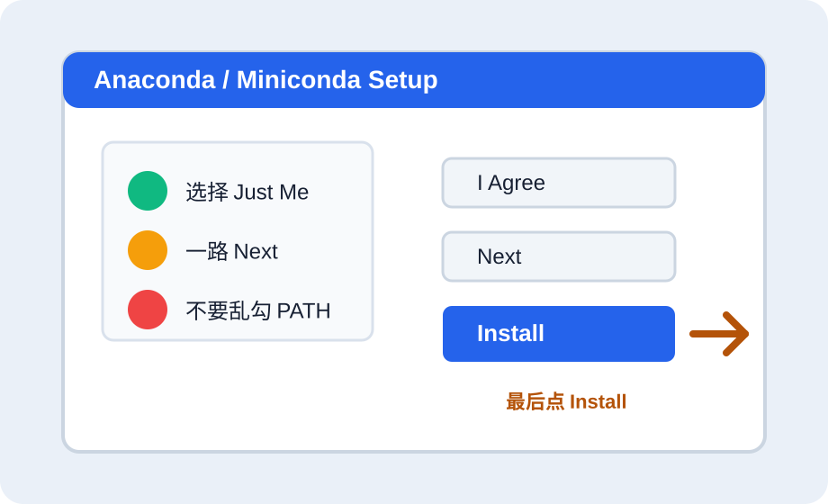
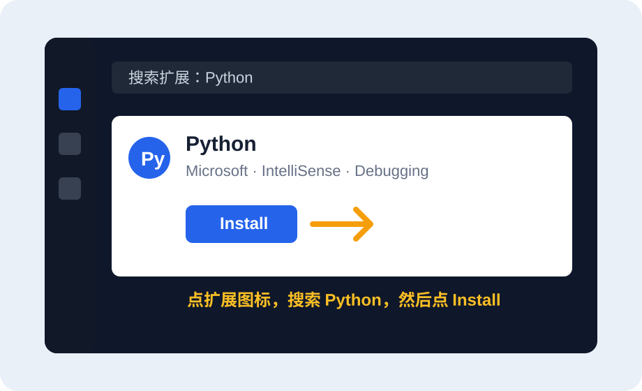
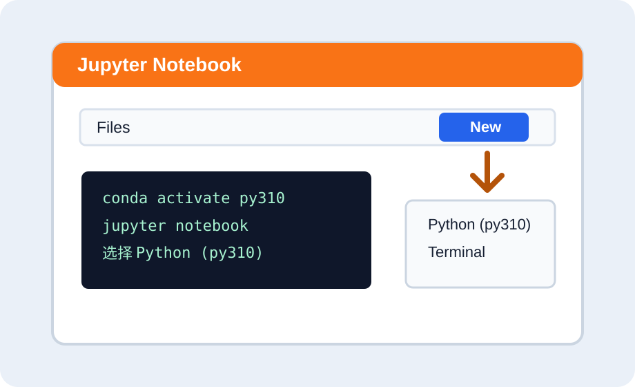

Start Here
从零开始的安装路线
如果你不知道自己该装什么，按这条路线走。不要一开始就装 CUDA、TensorFlow、YOLO。
Click Guide
安装时点哪里的示意图
这些是项目内绘制的步骤示意图，用来告诉你大概点哪个按钮和菜单。

Anaconda / Miniconda 安装器

VS Code 安装 Python 扩展

Jupyter Notebook 新建与运行
Tutorials
详细教程库
After Opening Official Website
打开官网之后怎么选、怎么装
这里按 Windows 新手路线写：点哪个下载按钮、选哪个版本、安装器哪些选项要勾，哪些不要勾。
Official Links
官方下载入口
优先从官网或官方文档进入，少用来路不明的网盘安装包。
Troubleshooting
常见报错怎么修
先选报错类型，再按“原因、检查、修复命令”处理。